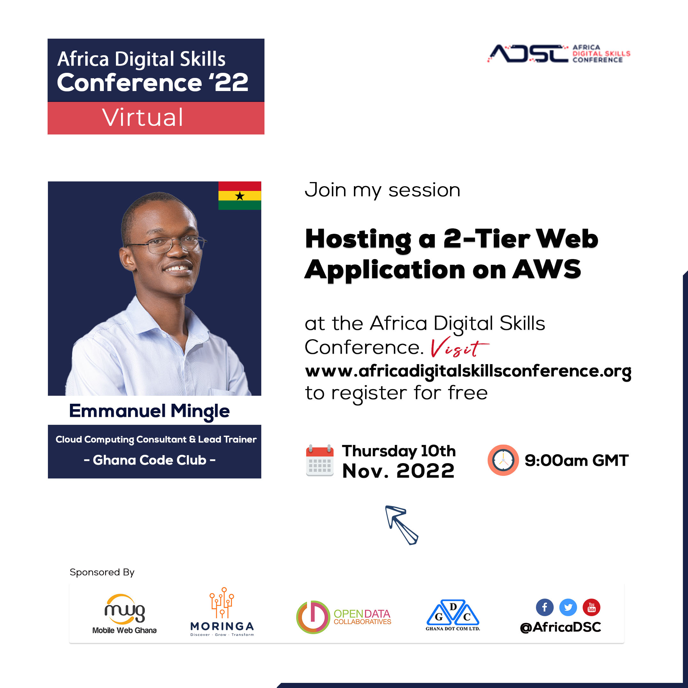

E. N. Mingle - Talks and Sessions
- Getting Started with Software Engineering || TaWEP STEM Tuesdays || March 9, 2021 || Link
- Introduction to Algorithms || TaWEP STEM Tuesdays || March 23, 2021 || Link
- Introduction to Algorithms || TaWEP STEM Tuesdays || March 23, 2021 || Link
- Understanding the Concepts of Web Development || TaWEP STEM Tuesdays || May 4, 2021 || Link
- Putting our First Website Together || TaWEP STEM Tuesdays || May 11, 2021 || Link
- Editing an Existing Website Templates || TaWEP STEM Tuesdays || May 18, 2021 || Link
- Hosting Web Applications - Free Hosting/Cloud Platforms || TaWEP STEM Tuesdays || May 25, 2021 || Link
- Introduction to Robotics || TaWEP STEM Tuesdays || February 15, 2022 || Link
- Migrating your Business to the Cloud || US Embassy Ghana - STEM Series || August 13, 2021 || Link
- Understanding and Using Digital Tools for Remote Work || US Embassy Ghana - STEM Series || March 19, 2021 || Link
- Data Security on Mobile Devices - The Do's and Dont's || US Embassy Ghana - STEM Series || January 29, 2020 || Link